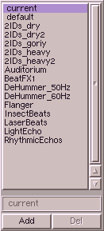

Am rechten Rand fast aller Operatoren wird eine Gruppe von
Schaltern eingeblendet, mit deren Hilfe man komfortabel Presets
verwalten kann. Ein Preset ist ein Set von Parametern, welches
man zur späteren Wiederverwendung unter einem aussagekräftigen
Namen abspeichern kann.
Ein bereits existierendes Preset wird durch Anklicken in der
Liste aktiviert, dabei werden die gespeicherten Parameter
sofort geladen. Ein Doppelklick führt zum Start der Berechnung.
Der Name eines Presets kann über das unter der Liste liegende
Eingabefeld verändert werden.
Mit dem Button 'Add' werden die aktuellen Einstellungen als
Preset abgespeichert.
Mit dem Button 'Del' wird das aktuell ausgewählte Preset ge-
löscht.
Wenn sie ein Preset unter dem Namen 'default.cfg' abspeichern,
dann werden diese Werte als initiale Einstellungen genommen.
Wenn sie eigene Presets erstellt haben die auch für andere
Nutzer nützlich sind, dann senden sie mir die bitte zu.
|